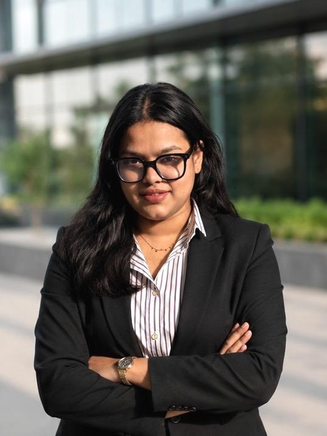

Best Paper Award
ICSSR EHP NEXUS 2026 · Gautam Buddha University · 27–28 April
A research practice shaped by teaching, field engagement, sustainability programmes, professional training and science–policy dialogue.

Verified activities from teaching, sustainability programmes, conferences and professional service.
ICSSR EHP NEXUS 2026 · Gautam Buddha University · 27–28 April
Volunteer and Rapporteur · 16–20 March
Facilitator and Judge · sustainable city design challenge for Classes 9–12
World Sustainable Development Summit and water-governance working group · 25–27 February
Principles of Remote Sensing (NRG169) · 32 practical hours · July–December
Arsenic in the Environment · KIIT, Bhubaneswar · 20–24 October
Delivered 32 practical learning hours for Principles of Remote Sensing within the MSc Geoinformatics programme at TERI SAS.
Facilitated and judged a sustainable-city design challenge for students in Classes 9–12.
Experience in scientific communication, reporting, academic coordination and interdisciplinary collaboration.
Volunteer and rapporteur for a professional training programme held 16–20 March 2026.
Participation in a water-governance working group alongside WSDS, 26–27 February 2026.
Field-based engagement with INTACH connecting river landscapes, heritage and environmental observation.
Rapporteurship and documentation experience across sustainability and multilateral policy sessions.
Virtual workshop focused on developing educational activities using QGreenland data.
Applications in agriculture and natural-resource management at TERI SAS with collaborating institutions.
Twenty-one-day programme supported by the National Geospatial Program, DST, Government of India.
One-week capacity-building programme covering mapping, monitoring and mitigation.
Natural & Applied Sciences · TERI School of Advanced Studies, New Delhi
Dr B.R. Ambedkar University · 2021–2023
University of Delhi · 2018–2021
Delhi Public School, Aligarh.
St. Francis Inter College, Hathras.